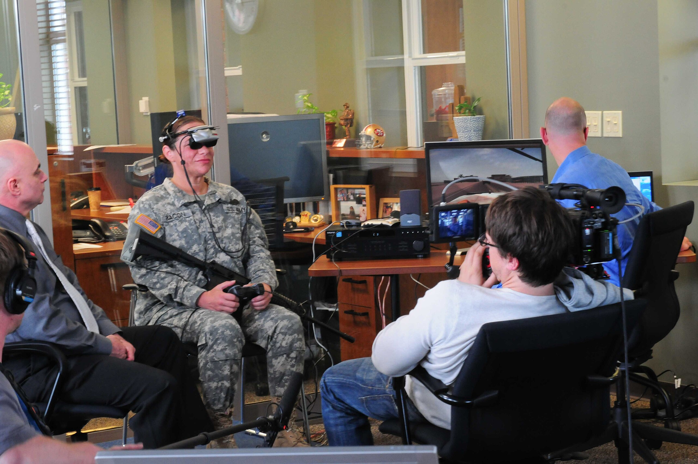

How VR Helps Afghanistan and Iraq Veterans Overcome PTSD

What is VRET
Virtual Reality Exposure Therapy (VRET) is an approach to treating PTSD where patients are immersed in a controlled virtual environment that closely resembles their traumatic experience. Unlike traditional imaginal therapy, VR allows for the creation of a multi-sensory experience with visual, auditory, and tactile stimuli.
Societal Impact
According to the UN, PTSD affects about 3.9% of the world's adult population, but these figures are significantly higher among combat veterans.
Of the 2.5 million American service members who participated in operations in Iraq and Afghanistan, up to 22% developed PTSD.
In 2014, the costs for inpatient and outpatient treatment were $3.63 billion and $1.48 billion, respectively.
More than $20.28 billion per year was paid in disability benefits for veterans with PTSD and TBI.
PTSD is associated with suicide attempts, psychiatric comorbidity, family problems, unemployment, and economic losses—in the US alone, annual productivity losses from PTSD amount to about $3 billion a year.
For a long time, the gold standard for treating PTSD was traditional exposure therapy (gradual and controlled confrontation of the patient with their fears), but it was not always accessible or effective.
In 20-25% of veterans, premature termination of treatment was observed due to high stress from the therapy itself or emotion regulation difficulties. Furthermore, approximately 20% of service members with PTSD are resistant to any form of treatment, and about 40% of recovered patients show relapses within a year after therapy.
The Birth of VRET as a PTSD Therapy Method
Twenty years after the end of the Vietnam War, many veterans continued to struggle with a chronic, therapy-resistant mental disorder. In 1997, researchers from the Georgia Institute of Technology and Emory University launched the groundbreaking "Virtual Vietnam" project. The system was developed by an interdisciplinary team and became the first systematic attempt to combine virtual reality technology with established principles of exposure therapy for treating PTSD.
How Does It Work?
VRET is based on the established principles of exposure therapy and fear extinction learning.
Traditional Prolonged Exposure (PE) therapy for PTSD typically involves the imaginal reliving of traumatic events in a therapeutic setting. However, many patients were unwilling or unable to effectively visualize traumatic events.
VRET was designed to bypass these natural avoidance tendencies by directly delivering multi-sensory and context-relevant cues that aid in the confrontation and processing of traumatic memories, without requiring patients to rely solely on recall effort.
The Largest Study on VRET Efficacy
In 2022, the results of the largest study to date on the effectiveness of VRET for combat-related PTSD were published. A team of scientists led by Dr. JoAnn Difede from Weill Cornell Medical College conducted a seven-year randomized clinical trial involving 192 service members and veterans of operations in Iraq and Afghanistan.
Study Participants
- 90% male, average age 34.6 years
- Representatives from various branches of the military: Army (58.9%), Marine Corps (28.6%), Navy (7.8%), Air Force (4.2%)
- Varied combat experience: from one to four or more deployments
- 89.1% had severe or extreme PTSD
- 54.2% suffered from comorbid depression
Treatment Technology
The VRET system used in the study included a Head-Mounted Display (HMD), stereo headphones, and a tactile platform with vibration feedback. The developers created numerous combat scenarios that accurately reproduced the conditions of service in Afghanistan and Iraq.
Results and Key Findings
The study showed that VRET is as effective as traditional Prolonged Exposure (PE):
- VRET: improvement of 19.98 points on the CAPS-IV scale
- PE: improvement of 21.23 points
76.7% of study participants preferred VR therapy to traditional methods. Although preferences did not directly affect the treatment outcome, they may play an important role in the motivation to complete the course of therapy.
An important advantage of VRET was its lower dropout rates:
- VRET: 27.8% vs 34.7% treatment dropouts for PE
- The lowest dropout rates (only 17%) were observed in the VRET group with medication enhancement
Key Finding: The Role of Comorbid Depression
The most important discovery was that comorbid depression is a critical factor in treatment selection:
For patients with depression:
- VRET was significantly more effective than traditional therapy (p=0.004)
- An improvement of 3.51 points more compared to PE
For patients without depression:
- PE showed better results (p<0.001)
- An improvement of 8.87 points more compared to VRET
Why was VR more effective for veterans with comorbid depression?
- Behavioral Activation: Navigating in VR requires active engagement, which stimulates patients.
- Overcoming Anhedonia: The novelty and immersion of VR can help overcome the reduced ability to experience pleasure.
- Controlled Stimulation: VR can provide the necessary level of stimulation for effective exposure in patients with blunted emotional responses.
Practical Advantages of VR Therapy
Safety and Control
- Complete safety of the virtual environment
- Ability to instantly stop or change the scenario
- Gradual increase in the intensity of stimuli
Standardization of Treatment
- Identical conditions for all patients
- Ability to precisely repeat sessions
- Objective assessment of progress
Accessibility
- Does not require travel to potentially dangerous locations
- Can be conducted in any clinic with the appropriate equipment
- Opportunity to train a larger number of specialists
Limitations and Challenges
Despite promising results, VR therapy has its limitations:
- High cost of equipment and development
- Need for special training for therapists
- Limited generalizability of results (studies have mainly involved male service members)
- Technical requirements for equipment and facilities
Future Directions
Expanding Application
- Inclusion of female service members and civilian patients
- Study of different types of trauma
- Multicultural research
Technological Improvements
- More realistic and adaptive systems
- Integration of real-time biofeedback
- Personalized scenarios based on individual experiences
Integration with Other Methods
- Combination with medication
- Use of genetic biomarkers
- Machine learning to optimize therapy
Conclusion
VR therapy does not replace traditional methods but complements them, providing clinicians with a powerful additional tool.
The future of PTSD treatment lies in a personalized approach, where technology, biomarkers, and the patient's clinical characteristics are combined to create an optimal treatment plan for each specific case.
The study also highlights the importance of continued investment in personalized treatments for mental disorders, especially for those who have sacrificed their health in service to their country. VR therapy represents not just a technological breakthrough, but also a new hope for veterans in their struggle to regain a normal life after the traumatic experience of war.